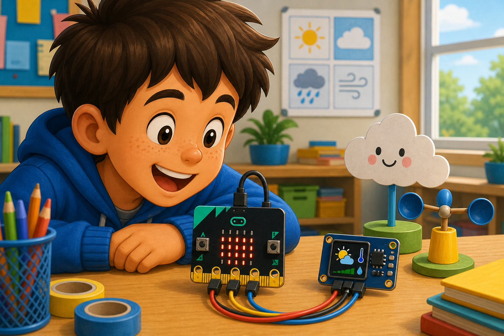

Tiny display
DetectValue changes
→
DecideWhat to show
→
DoUpdate the screen
I2C lets your micro:bit talk to smart modules using two data wires.
Lots of sensors and small displays use I2C. Each device has an address.
Use I2C when a module needs more than simple on/off pin control.

from microbit import *
devices = i2c.scan()
display.show(len(devices))
if devices:
display.show(Image.YES)let value = pins.i2cReadNumber(32, NumberFormat.UInt8BE)
basic.showNumber(value)i2c.scan() is a handy first test in MicroPython. Check your module's address and voltage before sending commands.